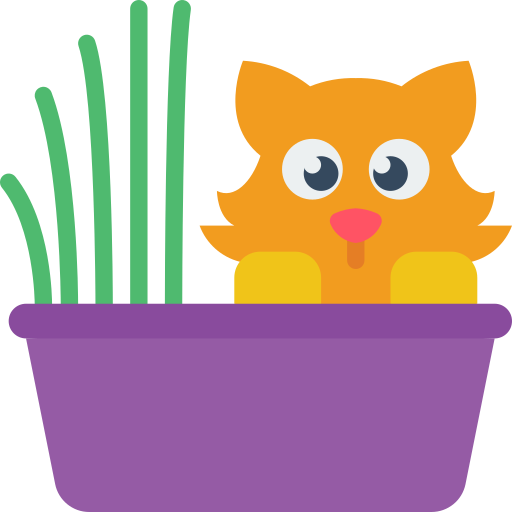

<app-header pageTitle="Planter og Dyr"></app-header>


<ion-content>

<ion-toolbar>
  <ion-buttons slot="end">
    <ion-button size="small" (click)="presentAlert()">
      Filter
      <ion-icon slot="end" name="filter-outline"></ion-icon>
    </ion-button>
    
  </ion-buttons>
</ion-toolbar>

  <ion-list>
    <ion-item button detail="true" *ngFor="let item of plantsAndAnimals">
      <ion-thumbnail slot="start">
        
      </ion-thumbnail>
      <ion-label>
        <h3>{{item.Title}}</h3>
        <p>{{item.Description}}</p>
      </ion-label>
    </ion-item>
  </ion-list>

  <!-- <ion-list>
    <ion-item button detail="true">
      <ion-thumbnail slot="start">
        
      </ion-thumbnail>
      <ion-label>
        <h3>Bulldog Mason søger legekammerat</h3>
        <p>Mason søger nogen til at lege med ham.</p>
      </ion-label>
    </ion-item>
    <ion-item button detail="true">
      <ion-thumbnail slot="start">
        
      </ion-thumbnail>
      <ion-label>
        <h3>Siameser kat </h3>
        <p maxlength="10"> Misty søger passer i 10 dage.
        </p>
      </ion-label>
    </ion-item>
    <ion-item button detail="true">
      <ion-thumbnail slot="start">
        
      </ion-thumbnail>
      <ion-label>
        <h3>Ørken Kaktus</h3>
        <p maxlength="10"> Caktus søger en veninde til at vande den engang hver 3 måned.
        </p>
      </ion-label>
    </ion-item>
    <ion-item button detail="true">
      <ion-thumbnail slot="start">
        
      </ion-thumbnail>
      <ion-label>
        <h3>Hænge Pil </h3>
        <p maxlength="10"> I weep for someone to take good care of me. 
        </p>
      </ion-label>
    </ion-item>
  </ion-list> -->

  <ion-icon name='trash' trash style = 'color:blueviolet'>
  </ion-icon>

  <ion-fab slot="fixed" vertical="bottom" horizontal="end">
    <ion-fab-button>
      <ion-icon name="add"></ion-icon>
    </ion-fab-button>
  </ion-fab>
</ion-content>
